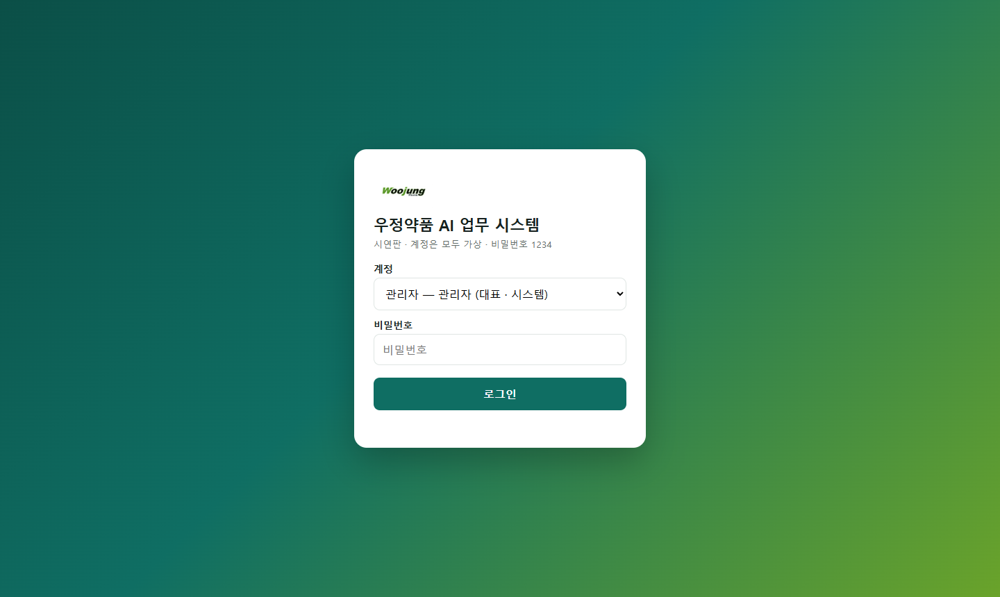
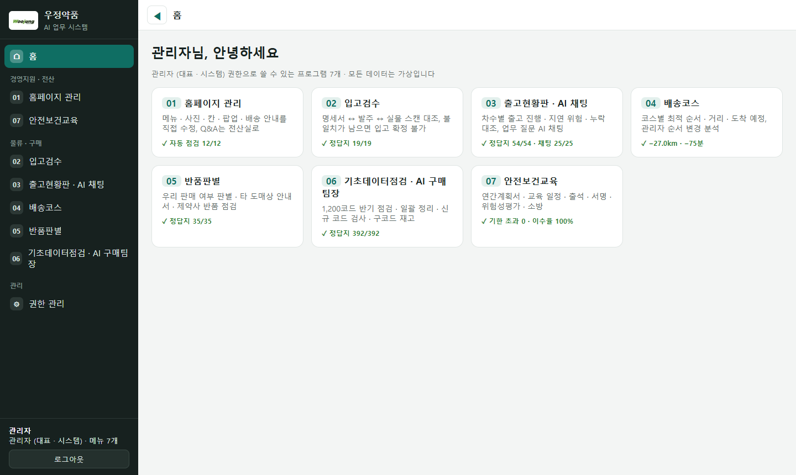

우정약품 AI 업무 시스템
입고부터 출고 · 배송 · 반품 · 기초데이터 · 홈페이지 · 안전보건까지.
현장에서 매일 하는 일을, 실수 없이 더 빠르게.
작성자: 김성진
왜 필요한가
그래서 실수 · 시간 · 비용이 생깁니다.
확인하지 않으면 다음 단계로 넘어가지 않습니다. 빠뜨림이 구조적으로 막힙니다.
명세서 · 지시서와 실제 스캔을 맞춰 보고, 다른 곳만 바로 보여줍니다.
휴대폰 · 태블릿에서 크게, 쉽게. 부서마다 필요한 화면만.
하나의 시스템
일곱 가지 프로그램이 하나로 묶여 있습니다. 관리자는 전체를, 직원은 권한을 받은 메뉴만 봅니다.


지금 된 것 · 도입하면 연결할 것
앞으로가 중요합니다
화면과 기능은 이렇게 만들어졌습니다.
하지만 화면만으로는 누구나 비슷하게 만들 수 있습니다.
우정약품만의 AI 엔진이 되는 것은,
현장 실무자가 매일 쓰면서 겪는 예외와 노하우를 규칙으로 쌓아 갈 때입니다.
쓰는 만큼 다듬어지고, 다듬은 만큼 실수가 줄어듭니다.